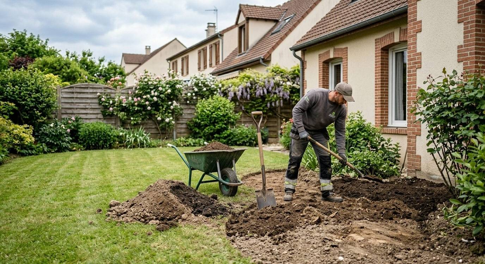
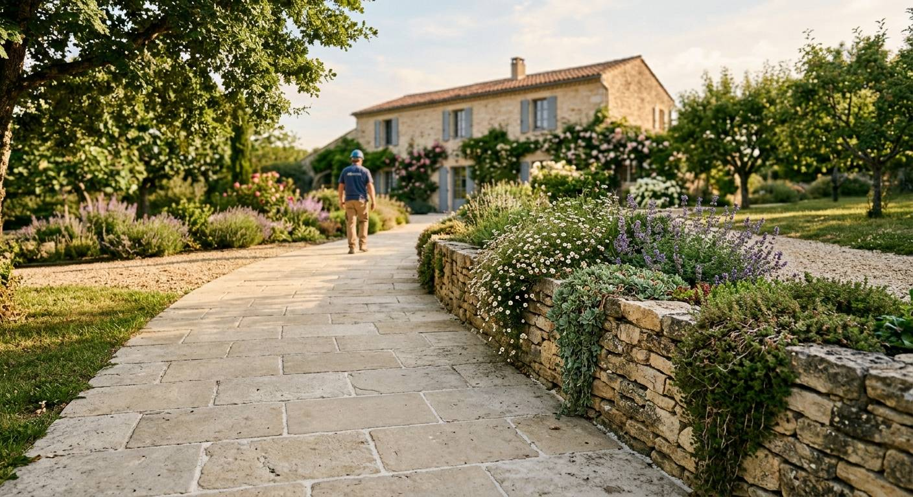
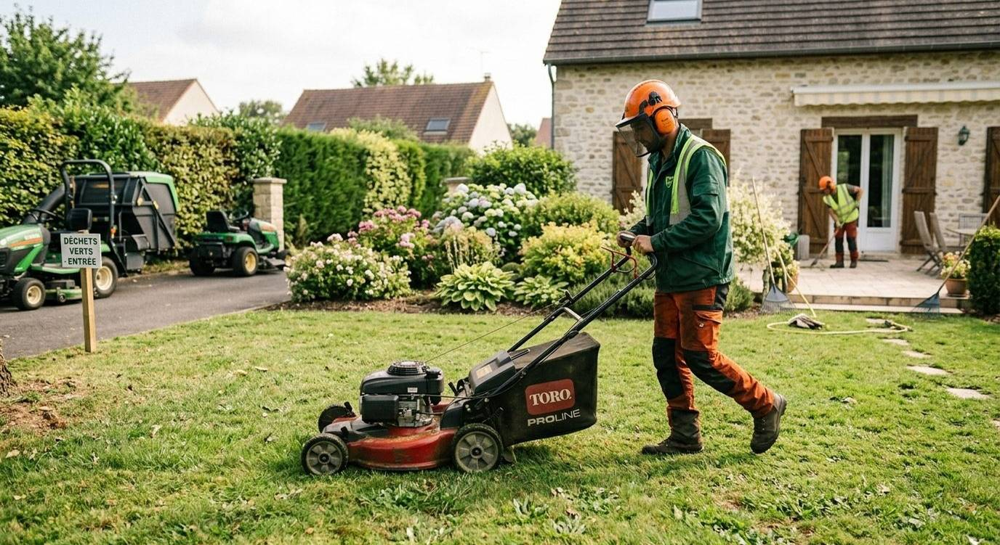

Nos prestations
Deux façons de prendre soin de votre extérieur
Créer un jardin ou le garder en forme toute l'année : choisissez par où commencer.



Aménager
Créer, planter, engazonner
- Création de jardins. Massifs, pelouses et allées pensés selon le terrain.
- Plantations. Arbustes, haies et vivaces dans les massifs.
- Engazonnement. Préparation du sol, puis semis ou pose de gazon.
- Massifs et bordures. Aménagement de massifs et de bordures.
- Allées et cheminements. Des circulations adaptées à votre jardin.

Entretenir
Un entretien régulier, un jardin net
- Tonte et pelouse. Tonte régulière de la pelouse.
- Taille de haies et d'arbustes. Entretien régulier ou ponctuel.
- Désherbage des massifs. Massifs maintenus propres.
- Ramassage des feuilles. Feuilles ramassées dans le jardin.

Un projet précis ?
Décrivez-nous votre terrain
Surface, contraintes, travaux souhaités : quelques lignes suffisent pour démarrer la discussion.